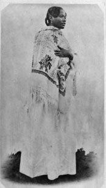

Betsimisarakas
| Betsimisaraka | |
|  « Loholoka : femme betsimisaraka, 1901 » |
|
| Populations | |
|---|---|
| Autre | |
| modifier |
|
{kind=link}
Les Betsimisaraka sont un peuple de Madagascar, qui occupent la majeure partie du littoral oriental de l'île, depuis la région de Mananjary au sud, jusque dans celle d'Antalaha au nord. Comme les Sakalava de la côte ouest, les Betsimisaraka constituent un regroupement de plusieurs communautés que les circonstances historiques ont unifié à l'intérieur d'une même dénomination. Ce regroupement a été qualifié de confédération, dans la mesure où il ne se réalise pas dans le but d'élire un seul et même homme à sa tête, mais de créer des alliances économiques et politiques entre les différentes communautés qui la composent. Ces alliances sont nécessaires au bon fonctionnement de ces sociétés car le contexte de cette région au XVIIIe siècle, façonné par des échanges commerciaux importants entre européens et malgaches, pouvait déstabiliser leurs organisations.
Au XVIIIe siècle, Madagascar a de nombreux contacts et échanges avec les étrangers, principalement sur la côte nord-ouest et la côte orientale de l'île. Cette économie concerne divers produits comme le riz, le bétail, les écailles de tortues, et autres, mais elle se concentre principalement sur le commerce d'individus. C'est au XVIIIe siècle que la traite esclavagiste prend son véritable essor, principalement impulsée par la demande de main d'œuvre croissante des nouvelles colonies, pour travailler dans les plantations. Pour autant il faut savoir que la traite des hommes existent depuis plusieurs siècles; depuis les premières migrations austronésiennes et africaines, entretenus ensuite par les musulmans de la côte est africaine et poursuivis par les européens dès le XVIe siècle empruntant la route des Indes. Ils faisaient escale à Madagascar pour se ravitailler, se reposer et par la même occasion emmener des hommes à bord, qui sont ensuite revendus ou gardés par les équipages. Il faut prendre en compte que le contact avec les étrangers est déstabilisant car il est de nature purement économique. C'est à dire que les traitants européens (soit les négriers, soit les marchands en général) n'hésitaient pas à créer des tensions et même des conflits entre les différentes communautés, afin qu'ils se fassent la guerre, fassent des captifs, pour leur être ensuite revendus; il n'intervient ici aucune humanité. La demande d'esclaves étant en pleine expansion au XVIIIe siècle, elle menace les sociétés malgaches et provoque de nombreuses tensions entre les différentes communautés du pays. Les communautés en sont déstabilisées et divisées au moment où les structures politiques se morcellent peu à peu, c'est à dire à partir de la fin du règne de Ratsimilaho.
Ratsimilaho est un chef malata (mulâtre) qui a réussit rallier les communautés de la majeure partie de la côte est de Madagascar, sous une même dénomination: Betsimisaraka , c'est à dire ceux qui ne se séparent jamais, ceux qui restent solidaires. Ce ralliement va permettre de pouvoir faire face et gérer les échanges avec les européens, sans qu'ils ne perturbent complètement ces populations.
Sommaire[masquer] |
Histoire[modifier]
{kind=link}
Le commerce de traite et la création de la confédération Betsimisaraka au XVIIIème siècle[modifier]
Le commerce de traite[modifier]
Jusqu'au début du XVIIIe siècle, les peuples qui constituent le noyau du groupe betsimisaraka se dénomment respectivement, Antatsimo les communautés du Sud de la région , Varimo celles du Centre et Antavaratra celle du Nord. Chacun de ces peuples possédait ses propres particularités culturelles et linguistiques, si bien qu'ils pouvaient entrer en conflit. Justement, ces hostilités ont été encouragées par les traitants européens (négriers, marchands, gouverneurs de colonies comme celle de l'île de France...), dont le nombre augmenta de façon croissante entre le XVIIe et le XVIIIe siècle.
Ils fréquentaient la région pour acheter essentiellement des esclaves, du riz et du bétail, en échange d'armes, de verroteries, étoffes et autres. Ce commerce permettaient à certains de se ravitailler, et à d'autres de se procurer une main d'œuvre servile pour leurs plantations, comme celles de la colonie française d'île de France, aujourd'hui La Réunion. Ajoutons qu'au XVIIIe siècle les marchands qui fréquentent les côtes malgaches sont essentiellement français, bien qu'il y ait encore des Anglais, des Hollandais et des Portugais qui la fréquentent, mais dans une bien moindre mesure. Les principaux lieux de mouillage et d'échanges étaient la Baie d'Antongil, Sainte-Marie, Foulpointe, Tamatave, Fénérive, Mahambo et Mananara.
Entre le XVIe et la fin du XVIIIe siècle, les étrangers qui ont débarqués sur les côtes de Madagascar ne se sont jamais installés à proprement dit et n'ont tenté aucune intégration, une seule exception à la règle sont les pirates.
La piraterie[modifier]
Entre les années 1680 et 1710 la piraterie s'installe sur la côte orientale de l'île dans le nord est, entre Tamatave et Vohémar, passant par la Baie d'Antongil, Foulpointe et Sainte Marie. Ce point d'ancrage permettait aux pirates non seulement d'être stratégiquement bien placé pour contrôler les navires passant par la route des Indes, mais aussi de pouvoir se ravitailler en abondance et faire escale. Dans l'ensemble, les pirates entretenaient de bonnes relations avec les populations locales même si il y avait bien entendu des coalitions d'intérêts et donc des conflits. Ils s'installaient la plupart du temps avec des femmes malgaches, avec qui ils donnaient naissance à de nouveau-nés. Ces mulâtres ont constitués un nouveau groupe d'individus parmi les autres communautés malgaches, appelés malata ou zana-malata (« mulâtres » ou « descendants de mûlatres »).
Hubert Deschamps dans Histoire de Madagascar paru en 1972, suppose que les pirates n'entretenaient pas vraiment de bonnes relations avec les populations locales car ils étaient trop rudes et étalaient trop leurs richesses; il appuie cette hypothèse avec la destruction et le pillage de Libertalia - un gouvernement dit républicain que l'on peut qualifier d'égalitaire, où les pirates et les malgaches vivaient ensemble à Diego-Suarez. Dans l'ensemble, les chercheurs pensent que les pirates entretenaient de bons contacts avec les populations, comme Filliot dans La traite des esclaves vers les Mascareignes au XVIIIe siècle paru en 1974, Guillaume Grandidier dans Histoire physique, naturelle et politique de Madagascar, Histoire politique et coloniale, vol V, t. III, fascicule 1 paru en 1958, ou encore Yvette Sylla, dans son article Les malata: cohésion et disparité d'un groupe paru dans "Omaly sy Anio" en 1985-86, qui suppose le contraire, et leur accorde même une position influente au sein des communautés locales. Les pirates étaient alliés aux chefs locaux qui les consultaient de temps à autres pour s'attirer leur sympathie et éventuellement leurs bonnes grâces. Le sens de la hiérarchie, l'autorité stricte et l'esprit de solidarité des pirates peut permettre de comprendre, selon Yvette Sylla, la bienveillance des malgaches à leur égard et la réussite de leurs intégrations. Ils étaient aussi très certainement plus respectueux que les traitants européens, car leur démarche n'était pas la même dès le départ, ni les buts de leurs échanges avec les locaux. Les pirates s'intéressaient plus sincèrement aux malgaches, en essayant d'apprendre leurs langues, leurs coutumes, en mangeant comme eux, et en se mélangeant à eux. Ils créaient des alliances matrimoniales avec les peuples, créaient des coalitions d'intérêts avec les chefs locaux et quelque fois ils intervenaient dans les relations inter-communautaires, parfois conflictuelles.
Ratsimilaho, le fondateur de la confédération betsimisaraka était l'un de ces malata; son père - Tom Tew pour Guillaume Grandidier, qui effectua ses recherches à la fin du XIXe, et Thomas White, selon E.G Mangalaza et Filliot, chercheurs du XXe siècle - était un pirate d'origine anglaise; il s'est marié en 1695 avec Rahena, une princesse Anteva de la famille de Zafindramisoa, originaire de Foulpointe; tous deux eurent pour enfant le futur filohabe (grand chef) Ratsimilaho, appélé sous son règne Ramaromanompo.
La création de la confédération betsimisaraka[modifier]
Entre la fin du XVIIème siècle et le début du XVIIIème siècle, les Antatsimo et les Antavaratra étaient en situation conflictuelle pour le contrôle des centres de commerce. Ratsimilaho, étant un Antavaratra et un malata, réussit vers 1710 à s'imposer à la tête des peuples du nord, après avoir repoussé une invasion conjointe de communautés du Sud, les Tsikoa et les Anteva, conduite par le puissant chef Ramanano.
En effet, les populations qui habitaient entre l'Irangy et Manampontany (région betsimisaraka au sud de Tamatave) se sont unis sous le chef Ramanano, dans le but de partir à la conquête de Tamatave, Fénérive, Foulpointe et Sainte Marie, pour contrôler les principaux centres commerciaux avec les étrangers; ils prirent à cette occasion le nom de tsikoa, qui veut dire "qu'on ne renverse pas". Ces hommes réussirent à se procurer des armes, de la poudre, des balles.. nécessaires pour se battre, et aussi pour résister aux alliés de Ratsimilaho, qui en possédaient aussi. Par contre il faut préciser que l'usage des armes n'était pas factice, l'arme à feu avait une réelle portée symbolique de force et de pouvoir, c'est à dire qu'elles ne servaient pas à faire couler le sang mais à impressionner. Finalement, Ratsimilaho réussit à battre Ramanano, et à la suite de cette dernière confrontation les hommes de ce chef furent appelés betanimena, "qui sont couverts de terre rouge", un terme qui resta jusqu'aujourd'hui pour désigner les populations betsimisaraka du sud (de Mananjary à Tamatave).
Pour autant qu'ils aient été battus par Ratsimilaho, les Betanimena continuèrent à résister, poussant ainsi Ratsimilaho à se renforcer en s'alliant à d'autres communautés. Ainsi, il prit pour femme la fille d'un grand chef Sakalava, et lui demanda ensuite de combattre avec lui les Betanimena. Poursuivant la guerre, tout en menant une habile politique d'union avec différents partenaires, Ratsimilaho finit par soumettre sous son autorité la majeure partie du littoral oriental dont il regroupa les peuples à l'intérieur d'une grande confédération dénommée betsimisaraka, litt. « les nombreux qui ne se séparent pas ». Cette guerre dura longtemps, et selon Alfred Grandidier elle aurait été "l'une des plus longues et plus meurtrières et la plus féconde en évènements" de la côte orientale de Madagascar.
Cependant, après la disparition de Ratsimilaho au milieu du XVIIIe siècle, son royaume à l'unité finalement bien factice retrouva peu à peu son état de morcellement entre les différents chefs locaux, parmi lesquels les plus puissants étaient les Malata qui rivalisaient entre eux. Ceci explique la facilité de la conquête de la région par les armées de Radama Ier à partir de 1817. Depuis lors, jusqu'au moment de la colonisation française, les Merina réussirent à y maintenir leur autorité.
Le règne de Ratsimilaho[modifier]
Le nom de Betsimisaraka, "les nombreux à jamais unis, les nombreux inséparables" qui désigne les trois grandes communautés habitant entre Sambava et Mananara, a été donné au cours de la fameuse cérémonie où Ratsimilaho s'est allié avec les chefferies du Nord, les Antavaratra . Cette stratégie politique s'étendit ensuite aux populations Antatsimo du Sud (les Varimo, Tsitambala, Tsikoa, Betanimena). E.G. Mangalaza, dans Vie et mort chez les betsimisaraka publié en 1998 chez l'Harmattan, précise que Ratsimilaho a été un "filohabe" (un grand chef), et non un roi à proprement dit. C'est précisément pour ça que l'on parle de confédération Betsimisaraka et non de royaume Betsimisaraka.
Malgré tout, ce filohabe a su donner à sa région la structure et l'organisation solidaire qui lui fallait pour qu'elle puisse être une zone relativement prospère sur le plan commercial et agricole. En effet, sur le plan économique il libéralisa le commerce en ouvrant les ports betsimisaraka aux traitants étrangers, aux malata ou aux indigènes, favorisant ainsi les initiatives personnelles. Il encouragea la production de riz pour pouvoir exporter des surplus vers les Mascareignes. Sur le plan social, il essaya de mélanger les diverses communautés pour créer une véritable union et ouvrir le commerce aux gens du sud comme du nord, en donnant des terres à des Antatsimo vers Tamatave, Foulpointe, Fénérive, délaissées par les locaux. Il avait donc des ambitions politiques, économiques et sociales sur le long terme, espérant que ses descendants continuent à les porter et les perpétrer. Malheureusement, ils ne réussirent pas à maintenir une cohésion sociale au sein de la confédération; deux exemples sont relatés par E.G. Mangalaza dans Vie et mort chez les Betsimisaraka.
Tout d'abord le cas de Bety sa fille, qui donna Sainte-Marie aux français avant de reprendre ses esprits et redonner cette île à son frère Zanahary en 1757, après 7 années d'hésitation qui ont provoqué des représailles dans le camp comme de l'autre. Il y a aussi le cas de Juvy et Zakavola qui affaiblirent la popularité des malata de Foulpointe et Fénérive, en conduisant des expéditions pour razzier les Sihanaka et les Bezanozano. Notons que ces conflits ont été beaucoup encouragés par la compétition qui se jouait d'une part entre les communautés malgaches pour le commerce avec les étrangers, et d'autre part celle entre Français et Anglais pour le monopole commercial à Madagascar, qui ne fit qu'envenimer leurs relations et ainsi diviser les Betsimisaraka.
Organisation de la société Betsimisaraka[modifier]
Le pays Betsimisaraka s'étend sur environ 72 000 km² pour une population approximative de 1 million et demi d'habitant qui sont répartis sur 15 chefs lieux. Les Betsimisaraka sont sédentaires et sont pour la plupart des agriculteurs et des pêcheurs. Ils sont organisés selon un système de chefferies que l'on appelle tanky, découpé d'Est en Ouest et inversement. Elles exercent une autorité, vaky tany, sur le territoire préalablement limité et sur les populations qui y sont installées. Les chefferies regroupent plusieurs lignages, fehitry, unis par un tombeau principal appelé lônjobe. Ces lignages peuvent se segmenter en plusieurs sous-lignages que l'on appelle taranaka, tout comme le tombeau qui peut se subdivisé en plusieurs tombeaux secondaires tranomanara - ils regroupent dans l'ensemble entre 700 et 1500 personnes.
Dans chaque chefferie, chaque groupe lignager se dit "maître de la terre", soit tompin-tany ou tompon-tany, qui se concrétise avec un pacte conclu entre les membres d'un même lignage, les hommes de la chefferie et leur environnement. Ils sont mis en œuvre par des interdits fady que tout le groupe s'engage à respecter; par exemple il est fady de travailler la terre le Mardi. Chaque groupe lignager est protégé par un talisman vôlohazo, dont le seul détenteur est le chef du lignage filoha car lui seul a conclu un pacte avec "les esprits de la vallée". Le pouvoir du chef est incarné par une "expression collective" du "collège des anciens lohandriana" et le "pouvoir spirituel qu'il peut recevoir des ancêtres". Cette expression collective se réalise concrètement lorsque par exemple une décision ou un évènement important est en jeu et que le chef fait réunir le conseil jery.
{kind=link}
Voir aussi[modifier]
Articles connexes[modifier]
Bibliographie[modifier]
- Eugène Régis Mangalaza, Vie et mort chez les Betsimisaraka de Madagascar : essai d'anthropologie philosophique, L'Harmattan, 1998, 331 p. (ISBN 9782738473035)
- Olga Razanatsoazaka, L'éducation en pays Betsimisaraka, Université de Paris 5, 1986, 201 p. (thèse de 3e cycle)
- Yvette Sylla, L'Expérience catholique en terre Betsimisaraka (1933-1950) : les débuts de l'implantation montfortaine, Université de Paris 1, 1985, 384 p. (thèse de 3e cycle)
- Rakoto Ignace, La route des esclaves. Système servile et traite dans l'est Malgache, Paris, Harmattan, 2000
- Guillaume Grandidier, Histoire physique, naturelle et politique de Madagascar. Histoire politique et coloniale, vol V, t.3, fasc 1, Tananarive, 1958, par A. et G. Grandidier.
- J.-M. FILLIOT, La traite des esclaves vers les Mascareignes au 18ème siècle, ORSTOM, Paris, 1974, p.273.
- Yvette Sylla, "Les malata: Cohésion et disparité d'un groupe", Omaly sy Anio, 1985-86.
- Hubert Deschamps, Histoire de Madagascar, Paris, Mondes d'Outre Mer. Histoire, Berger-Levrault, 1972, 358p.
- Deschamps H., 1972, Les pirates à Madagascar, Paris, Berger Levrault, 221 p.
- De Flacourt, Histoire de la grande isle de Madagascar, Paris, Karthala, 1995, 655p.
- UNESCO, Histoire générale de l’Afrique, vol. 3 (VIIe – XIe siècles), 4 (XIIe – XVIe siècles) et 5 (XVIe- XVIIIe siècles).
- Alpers Edward A., "Madagascar and Mozambique in the nineteenth century: the erce of Sakalava raids (1800-1820)", Omaly sy anio, 5-6, 1977, pp. 37-53.
- Randrianja Solofo, Ellis Stephen, Madagascar. A short history, London, Hurst & Company, 2009.
Discographie[modifier]
- Madagascar : Land of the Betsimisaraka (collecteur Alain Desjacques), Unesco, Paris ; Auvidis, Gentilly, 1998, 1 CD (63' 40) + 1 brochure (15 p.)
Filmographie[modifier]
- Au coeur des terres Betsimisaraka, film doucmentaire réalisé par Patrick Profit, Atmosphere production, France, 2008, 52'